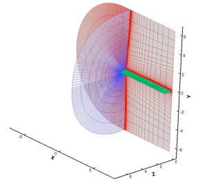

Steady and Unsteady Flow around Wings and Rotors

Steady, Transonic Flow over the ONERA-M6 Wing

Contact: ghosh (at) mcs (dot) anl (dot) gov

C-O, Single-Block Mesh (289x65x49 points) (Downloaded from here)
CRWENO5
WENO5
The coefficient of pressure on the wing surface is validated with experimental data for various span-wise locations and a good agreement is seen. The figures below show that the CRWENO5 schemes shows an improved resolution of the tip vortex in the wake, compared to the WENO5 scheme.

Flow around the Harrington rotor (Two-bladed)
Overset mesh system for the solution of flow around the Harrington rotor:
Blade mesh: C-O type, 267x78x56 points
Background mesh: Cylindrical, 127x116x118 points
Aspect Ratio: 8.33
Airfoil section: NACA 00xx (thickness: 27.5% at 0.2R (root), 15% at 1.0R (tip), linear variation)
Validation of the numerical solutions with experimental data - the thrust coefficient (CT) vs. power coefficient (CQ) and the figure of merit vs. the thrust coefficient are compared for a range of collective pitch angles and a good agreement is seen.
Although lower order numerical schemes are sufficient to predict integrated forces over wings and rotor blades, high-order accuracy is required to accurately capture the flow features in the wake as well as in the near-blade region. The figures above show the vorticity magnitude iso-surfaces and contours on a slice in the wake for solutions obtained by the CRWENO5 and WENO5 schemes. The figure below shows the tip vortex near the blade tip for the CRWENO5 and WENO5 solutions. In both these cases, the CRWENO5 shows an improved resolution of the vortices than the WENO5 scheme.
CRWENO5
WENO5
CRWENO5
WENO5
The CRWENO scheme is validated for three-dimensional flows for two cases: steady, transonic flow over the ONERA-M6 wing and the unsteady flow around a Harrington 2-bladed rotor.